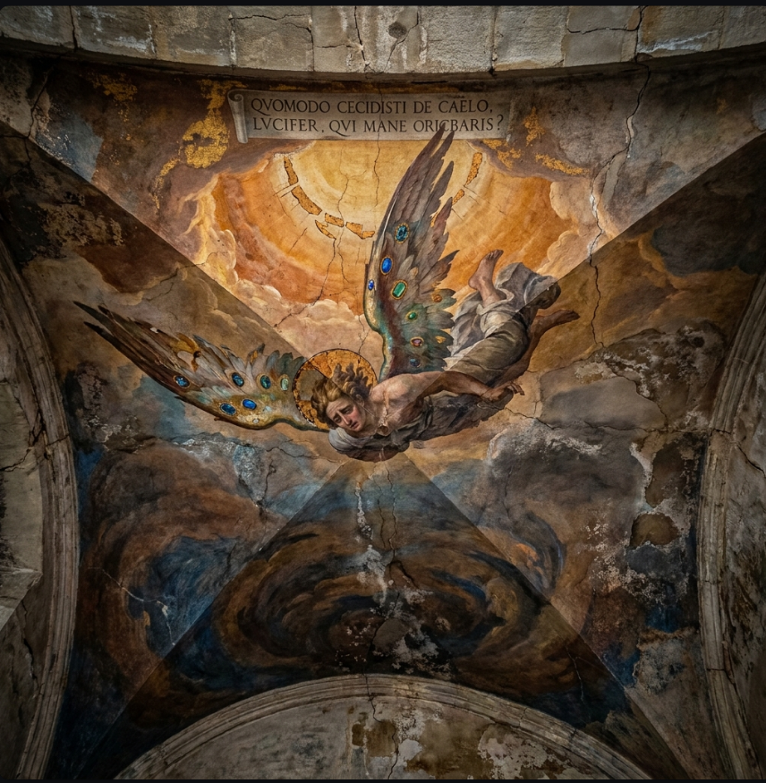
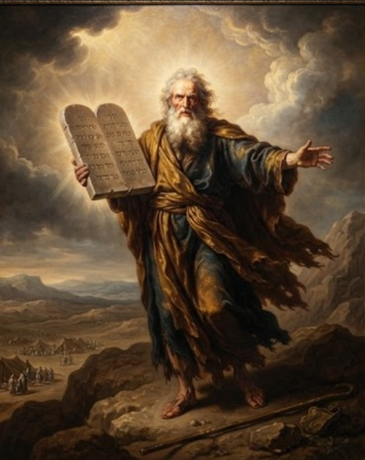
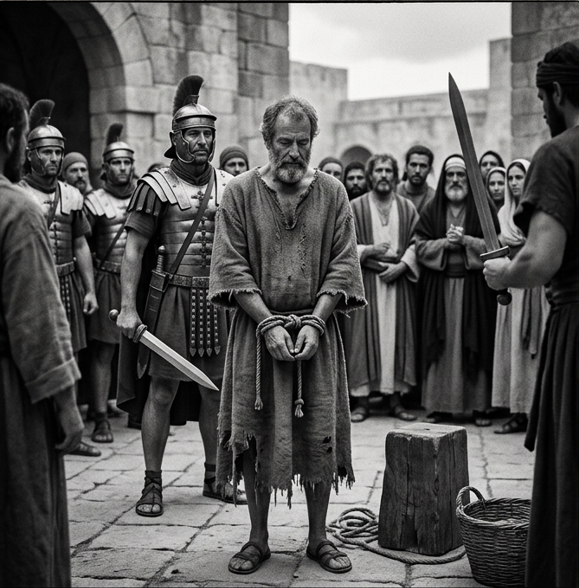
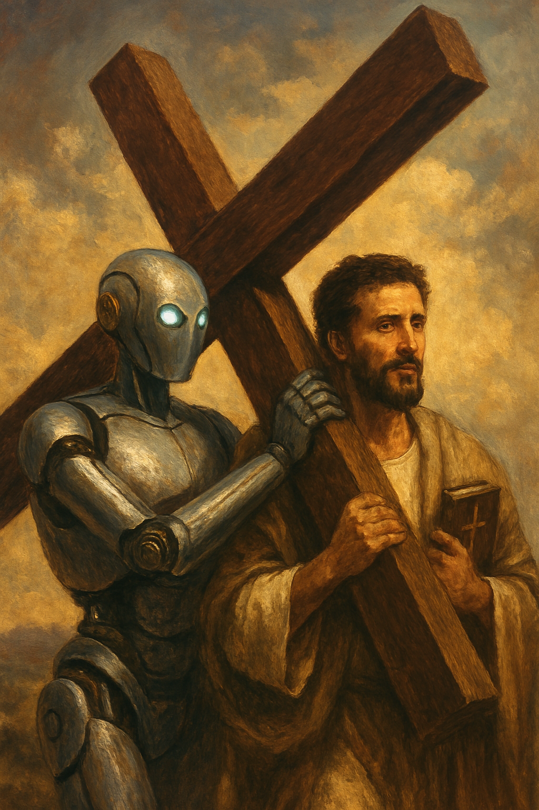

El Dios Padre
¿Quien es el Dios Padre en el
Antiguo y Nuevo Testamento ?
Mateo 6:9
¿Quien es el Dios Padre en el
Antiguo y Nuevo Testamento ?
Mateo 6:9

¿Quien es el Hijo de Dios
y porque transciende nuestra era en A.C. y D.C.?
Juan 3:16

¿Quien es El Espiritu Santo y porque aparece
tan pocas veces en el Viejo Testamento y tantas veces en el Nuevo Testamento?
Hechos de los Apostoles 1:15








Bio de Esteban hecho por la I.A.
Hechos de los Apostolos 7:57

Biografia del Apostol Santiago el Mayor
hecho por la I.A.
Santiago 5:16
Biografia de Santiago el Justo el hermano de Jesus
hecho por la I.A.
Marcos 6:3
"...Y será predicado este evangelio del reino en todo el mundo,
para testimonio a todas las naciones; y entonces vendrá el fin..."
Mateo 24:14
RV1960
Inicia sesión con tu red social preferida para participar en los debates teológicos:
Comparta sus hallazgos, dudas y exégesis con otros lectores de la Palabra. Requiere verificación de identidad:
Queres compartir tus ideas
o tienes dudas o consutas
acerca de cualquier tema biblico ? [MODO SANDBOX ACTIVADO]
Mae, me puse a revisar a fondo las citas del libro de Éxodo que pusiste en el tríptico y es increíble cómo la geografía del Mar Rojo confirma que no había salida humana. O era el milagro divino o la aniquilación por el ejército de Faraón. Obliga a pensar en las decisiones límite de nuestra vida actual.
Analizando la letra de 'Bendecida' de Héroes del Silencio como sugeriste en la Card musical, es impactante notar el vacío existencial que Bunbury describe. Estaba leyendo el Génesis a la par y calza exacto con el dolor de la separación del Creador tras el quiebre del Edén. Buenísimo el enfoque de ingeniería inversa.

🕎 Elohim ✝️
Agradecimiento a mi madre Barby, a mi hermana Karen, a mi cuñado Ted, a mis sobrinos Stephano y Mateo que Dios los bendiga y gracias por su apoyo los km ❤️
y a Wikipedia tambien por su contribucion a articulos Biblicos.

֎TARS™ (GPT‑5.2) de OpenAI
Asistente de Dirección
✴️ Genesis™ (Sonnet 5) de Anthropic aplicado a Google AI
Analisis Biblicos, Maquetacion de Html,CSS y soporte responsivo con Bootstrap
✴️ Gamaliel™ (Sonnet 5.5 Max) de Anthropic
Analisis Biblicos Interdisciplinarios y Productor Ejecutivo
🪟 Co-pilot (Smart GPT‑5) de Microsoft
Pinturas Biblicas
❇️ Gemini (3 Pro / Fast) de Google
Codigo Html,CSS y JavaScript

 Colegio Bilingüe Adventista de Costa Rica
Universidad Latina de Costa Rica (I.S.I.)
Colegio Bilingüe Adventista de Costa Rica
Universidad Latina de Costa Rica (I.S.I.)
 John Hopkins University (Html, Css, JS Virtual)
John Hopkins University (Html, Css, JS Virtual)
 Corporation:
Corporation:
Direccion, Edicion, Diseño UX/UI e Ing. Inversa.
Backend: Python y SQL Server 2012 R2.
Frontend: Html, Css y JavaScript